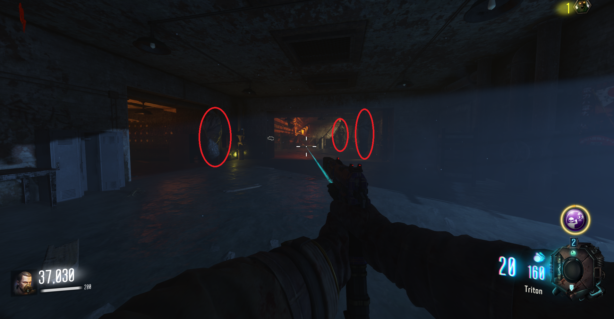
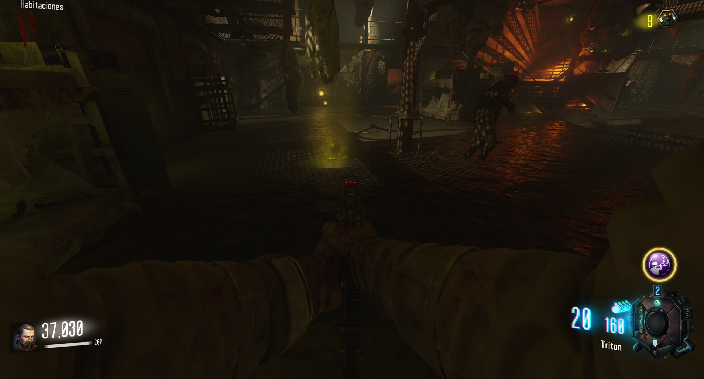
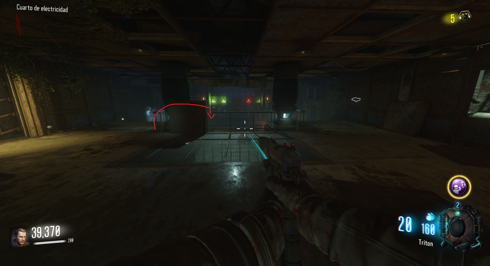
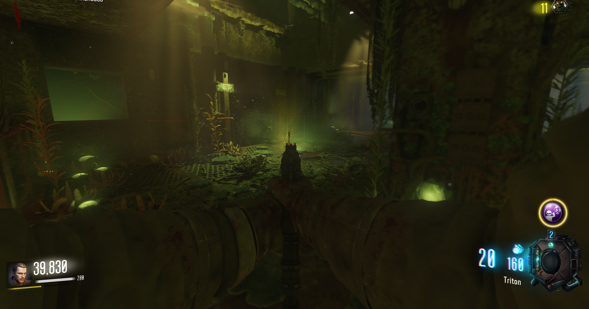
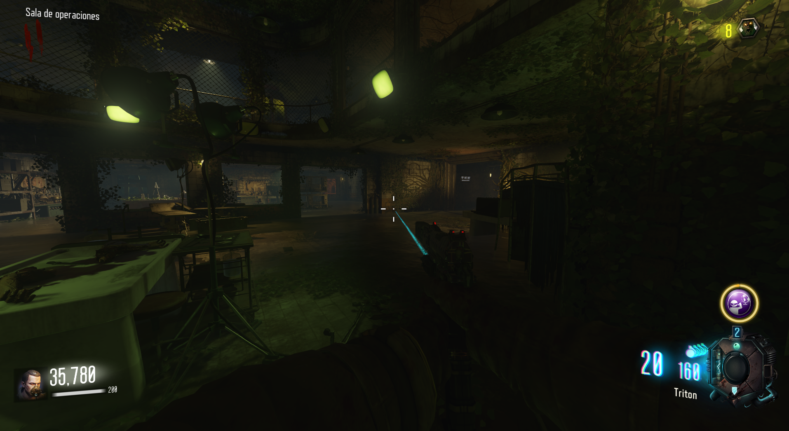
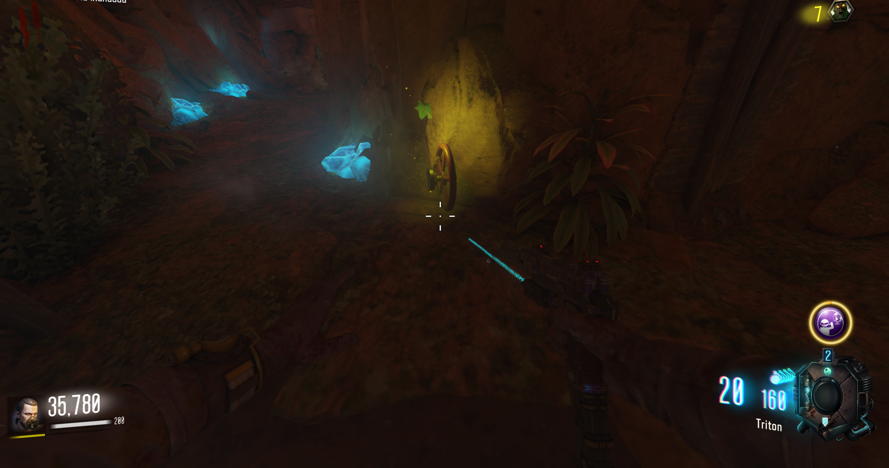
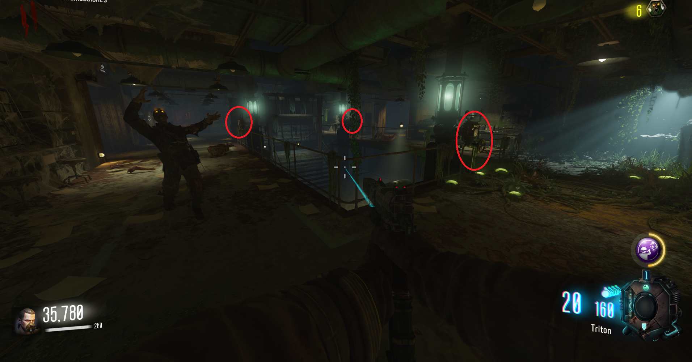

Tendremos que recolectar 3 piezas para arreglar las válvulas del Pack-A-Panch, que se encuentra en medio del búnker.
Primera parte:
En la sala de la derecha, donde se encuentra el agua morada, veremos muchos sacos colgando. Acuchillándolos, de manera aleatoria, la pieza saldrá.


Segunda parte:
En la sala de la izquierda para activar la electricidad, nos sumergiremos en el agua y quitaremos la telaraña. Tras matar a los zombies, la pieza aparecerá donde quitamos la telaraña.


Tercera parte:
En la gruta submarina de la planta baja del búnker, que está a mano derecha si bajamos por las escaleras, bucearemos y antes de llegar a la zona azul, la pieza se encontrará en el suelo.


Arreglar las válvulas: Una vez tengamos las piezas, volveremos a la sala del P-a-P y accionaremos cada una de las tres válvulas que están a su alrededor.

La puerta se abrirá y podremos acceder al Pack-A-Punch.